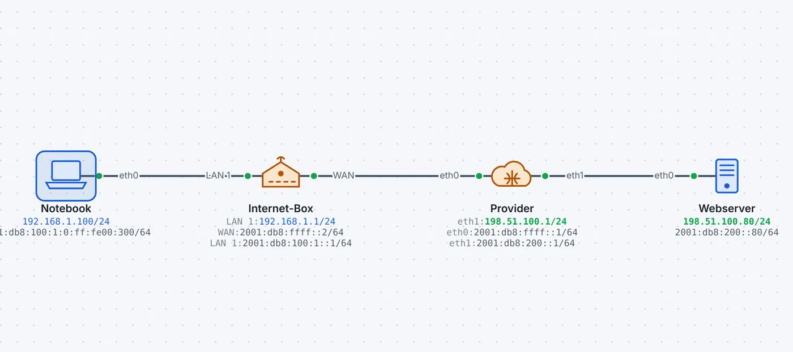
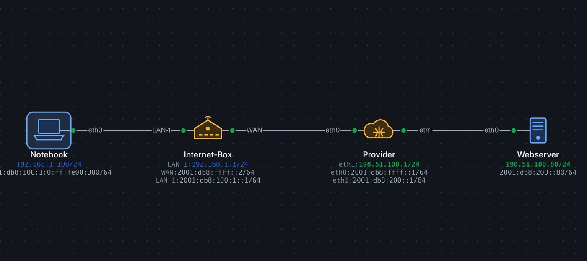

Viele Provider bauen ihr Netz nur noch mit IPv6. Die Geräte zu Hause und viele Webseiten sprechen aber noch IPv4. Dual-Stack Lite bringt IPv4 trotzdem ans Ziel, ohne dass der Kunde eine eigene öffentliche IPv4-Adresse braucht.
So funktioniert es
Station
Aufgabe
PC zu Hause
spricht IPv4 wie immer (privat, z.B. 192.168.1.10)
Internet-Box (B4)
packt jedes IPv4-Paket in ein IPv6-Paket (Next Header 4) und schickt es zum AFTR
Provider (AFTR)
packt aus, übersetzt die Absenderadresse per CGNAT und schickt das IPv4-Paket ins Internet
IPv6-Verkehr geht dagegen direkt, ohne Tunnel und ohne NAT.
Folgen
Die Internet-Box macht kein NAT mehr selbst, die Übersetzung passiert beim Provider. Darum funktionieren Portweiterleitungen über IPv4 nicht: Wer von aussen auf ein Gerät zu Hause zugreifen will, braucht IPv6. In der Paketliste sieht man aussen den IPv6-Kopf und innen das IPv4-Paket.
So geht es in leyoNET
Derselbe Text wie in der Hilfe der App (Taste F1).
DS-Lite
DS-Lite (Dual-Stack Lite, RFC 6333) bringt IPv4 über ein reines IPv6-Netz des Providers. Viele Kabel- und Glasfaseranschlüsse arbeiten so.
Die Internet-Box (B4) hat am WAN nur eine IPv6-Adresse. IPv4 aus dem Heimnetz packt sie unverändert in ein IPv6-Paket (Next Header 4) und schickt es zum AFTR des Providers. Sie macht selbst kein NAT.
Der AFTR packt das IPv4-Paket aus und übersetzt die private Absenderadresse per CGNAT auf eine öffentliche Adresse, die sich viele Kunden teilen. Antworten gehen den umgekehrten Weg zurück durch den Tunnel.
Darum kann man bei DS-Lite keine Portweiterleitung für IPv4 einrichten: Die öffentliche IPv4-Adresse gehört nicht dem Kunden. Über IPv6 sind die Geräte dagegen direkt erreichbar.
Einrichten: Projekt auf v4 + v6; an der Internet-Box die WAN-IPv6-Adresse und unter DS-Lite die Adresse des AFTR; beim Provider «Als AFTR arbeiten» und eine CGNAT-Adresse. In der Paketliste zeigt der Filter dslite die getunnelten Pakete.
Beispiel ansehen


DS-Lite: IPv4 im IPv6-Tunnel
Der Provider hat nur noch IPv6. Die Internet-Box packt IPv4 in IPv6, der AFTR des Providers übersetzt per CGNAT.
Das Notebook ruft eine Webseite auf, die nur über IPv4 erreichbar ist. Filter «dslite» zeigt die getunnelten Pakete.
«Live ansehen» öffnet das Netz in leyoNET, die Simulation läuft in einer Schleife. In der App findest du es unter Datei → Demo-Netze, mit Führung Schritt für Schritt.